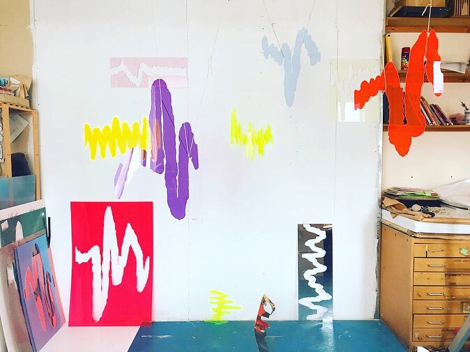

Phase 2

Starting from her experience working with laser cut fluorescent, reflective and transparent acrylic glass, Maria Teresa Ortoleva will work towards transforming the graphic representation of complex multidimensional and multivariate spectral data into sculptural objects of coded colours, textures and surface qualities that aim at operating perceptually, symbolically and empathically to convey the content of the analysis in an accurate and yet accessible and eloquent way. The same method will inform choices in placing the produced sculptural renditions of data in space: their heights, distances and layout, and how they engage with viewers.
The expected result will be an immersive and sensorial visualisation of a collective mindscape showing the ratio between conscious productive activity and moments of speculative thinking and imagination in urban lifestyles, and pointing at the importance of this balance to health and wellbeing.
Who we are
MARIA TERESA ORTOLEVA is a London-based artist and currently a King’s Artist in Residence in the department of Informatics at King’s College London. She graduated with a MA from the Slade School of Fine Art in 2014 and since then she has been working in the UK and in Italy, where she is represented by the gallery Luca Tommasi. Her work moves between interdisciplinary research, diagrammatic drawing, the sculpturisation/spatialisation of data, site responsive installations, education and community projects. Traversing these different areas, she explores phenomena of mental imagery and experiments with creating a language to make sense of the workings of imagination and reveal its value in cognition and mental wellbeing. Selected exhibitions of her work include: JGM Gallery (London, 2021), Bocconi Art Gallery (Milan 2020), Luca Tommasi (Milan, 2019; solo 2018), Palazzo Reale (Milan, 2017), Galleria San Fedele (Milan, 2017), Fondazione Arnaldo Pomodoro (solo, Milan, 2016), ExpoMilano2015, Wysing Arts Centre (Cambridge, 2013), Arcade (London, 2013). Other public presentations and engagement projects include: University of Milan Bicocca (2016), Drawing Room (London, 2015), Wysing Arts Centre (Cambridge, 2014-2015). Her work has received recognition and support from: King’s College London (2019), European Regional Development Fund (London Creative Network, Space, 2019), Ventura Projects Special Award (2018), Premio Cairo (finalist 2017), Premio San Fedele (finalist 2017), Leverhulme Trust (Wysing Arts Centre, 2013), Gay Clifford Award (UCL, 2012).
DR RITA BORGO [Bio incoming]